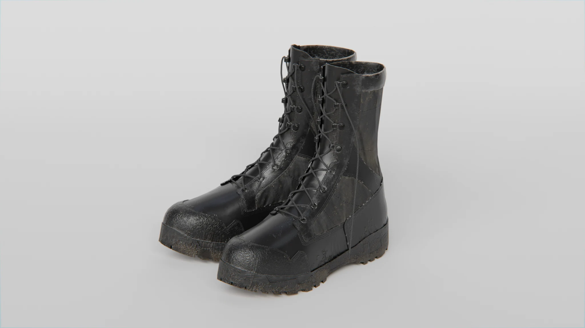
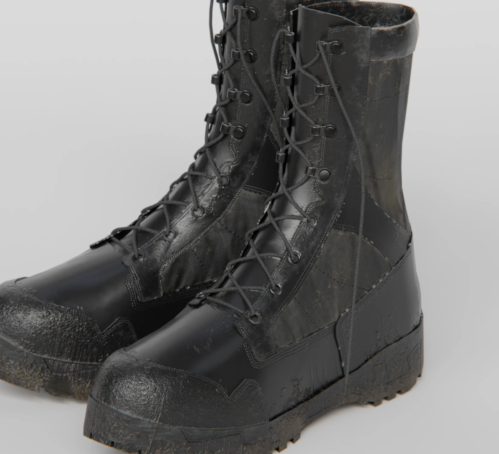
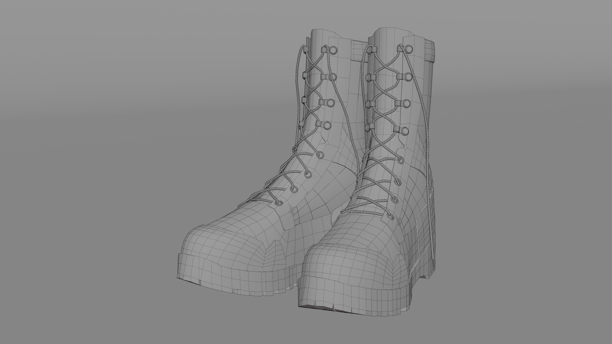
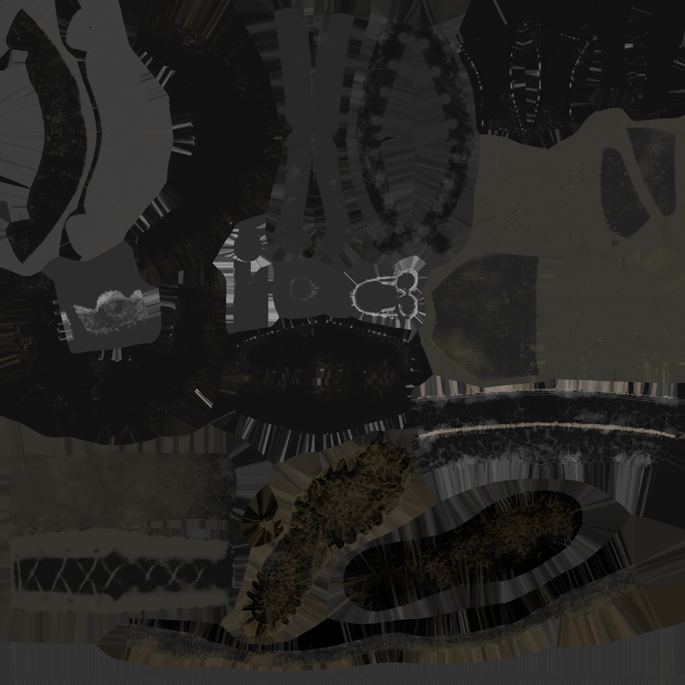
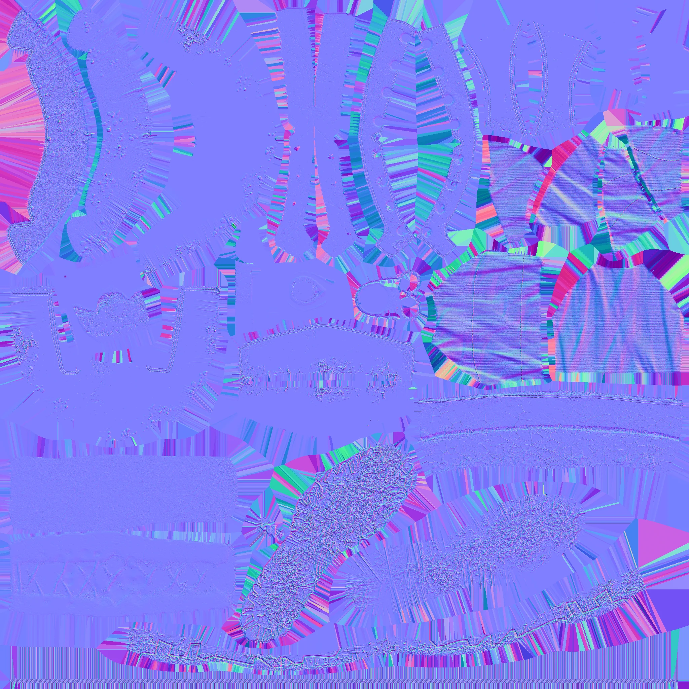
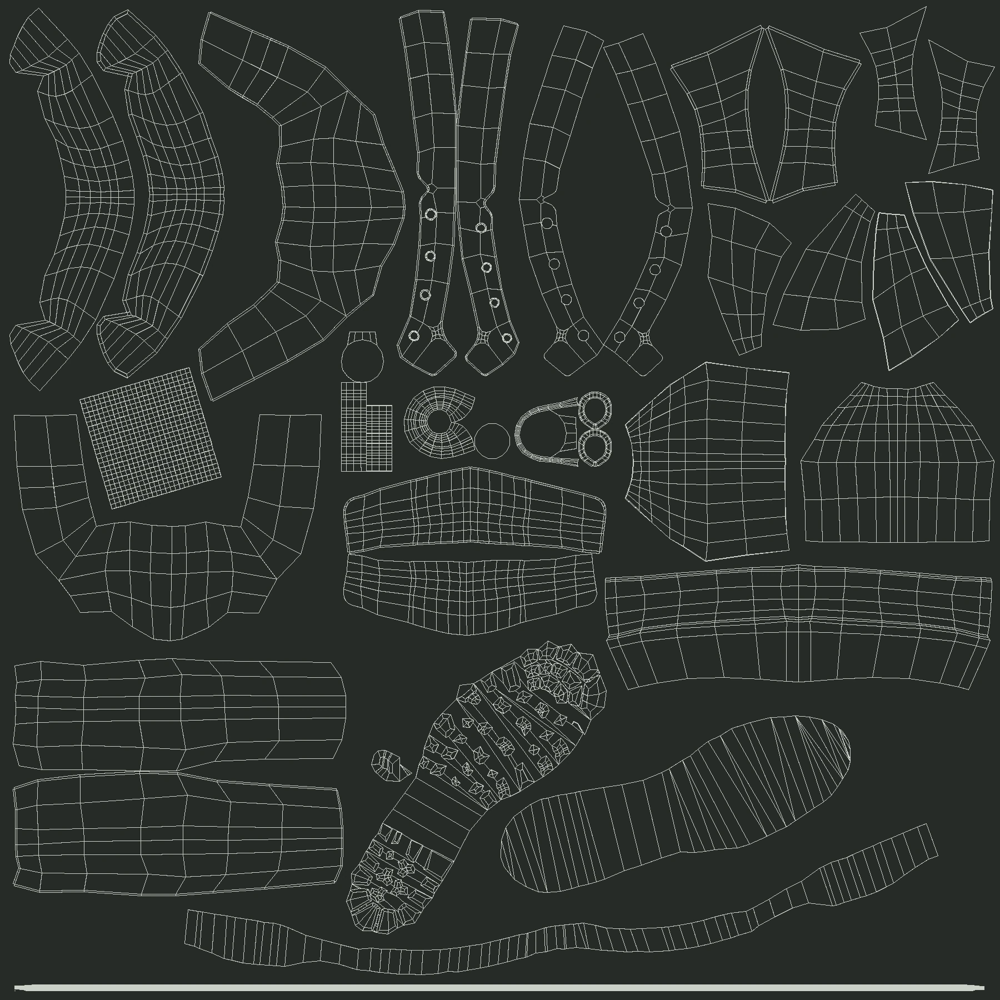

Boots / 군화
끈과 밑창의 구조, 가죽 표면을 표현한 군화 프롭.

01 / Modeling
군화의 실루엣과 끈 구조

02 / Mesh Flow
메시 플로우

03 / Materials & UV
가죽과 밑창의 재질



ROLE & CREDITS
담당 작업
모델링, 텍스처링, 렌더링
끈과 밑창의 구조, 가죽 표면을 표현한 군화 프롭.

01 / Modeling

02 / Mesh Flow

03 / Materials & UV



ROLE & CREDITS
모델링, 텍스처링, 렌더링